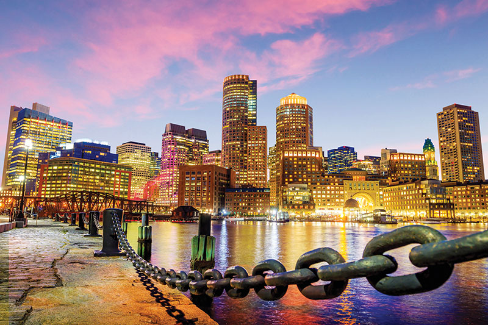

Boston Fires
Educating for Safety, Preparing for Action
Educating for Safety, Preparing for Action
Welcome to "Boston Fires", an interactive web application designed to educate and prepare you for fire safety. This educational journey allows you to explore fire incidents across Boston, understand the strategic placement of fire departments and hydrants, and equip yourself with essential knowledge to combat fire hazards. 🏢🔥
Immerse yourself in the history with a special feature on the Great Boston Fire of 1872. Dive deep into how this monumental event shaped fire safety protocols today. 📚🔥
Enjoy your exploration and stay safe! 🚒🛡️
It was a calm evening in November 1872, the streets of Boston were busy with merchants closing their shops and residents enjoying the brisk autumn air. The city, known for its intricate maze of narrow streets and brick buildings, was a hub of activity and prosperity. However, this calm was shattered at 7:20 PM on November 9th, when a small spark in a dry-goods store at the corner of Summer and Kingston Streets ignited a pile of wooden packing materials. Within moments, the fire spread rapidly, fueled by the flammable contents of the store. As the flames grew, they found new fuel in the adjacent buildings, most of which were constructed of wood and filled with combustible goods. The initial alarm rang out at 7:24 PM, and the first fire engines, pulled by teams of horses, clattered over the cobblestone streets towards the growing inferno.
As we reflect on this historic blaze that reshaped Boston's fire safety measures, let's also explore the current number of fire incidents reported in Boston and examine the types of incidents that are most common today.
You can change the chart type to line.
Want to know the TOP 10 reason reported?
The firefighters arrived quickly, but they were met with an overwhelming wall of fire. The strong winds carried embers from building to building, causing the fire to spread uncontrollably. Water pressure was low, and the existing fire hydrants were few and far between, making it difficult to combat the blaze effectively. As the fire advanced, it consumed everything in its path—shops, homes, warehouses—turning the vibrant cityscape into a scene of chaos and destruction.

Firefighters from Boston and neighboring towns fought valiantly, pouring water onto the flames and creating firebreaks by demolishing buildings. Despite their tireless efforts, the fire raged through the night, casting an eerie glow over the city. The residents, in a state of panic, fled their homes, trying to save what little they could. The streets were filled with people, horses, and carts, all moving away from the relentless advance of the flames.
As dawn broke on November 10th, the extent of the devastation became apparent. The fire had consumed 65 acres of the city, destroying 776 buildings and causing an estimated $75 million in damages. Governor William B. Washburn immediately took action, coordinating with local officials and neighboring states to provide assistance. The state government set up relief funds and temporary shelters for the thousands of residents who had lost their homes and livelihoods.
The Boston Fire Department, despite its own losses, continued to lead the firefighting efforts. Reinforcements arrived from cities as far away as New York and Providence, bringing much-needed manpower and equipment. Together, they battled the flames for nearly 20 hours before finally gaining control.
After a major life-threatening event, the government increased the number of fire departments to ensure fires can be controlled immediately. 🔥🚒
Let's take a look at how many fire departments are currently in each area. Check out the chart below! 📊
Now, let's check out the fire department locations on the map! 🗺️ The markers show the exact locations of the fire stations. You can click on them to get more details about each station. 🚒🖱️ The blue circles represent the areas. Click on them to see how many fire departments are in each area. 🔵📍
In the aftermath of the fire, Boston faced the monumental task of rebuilding. The devastation was immense, but the city’s spirit remained unbroken. City planners and engineers quickly set to work, designing a safer, more resilient Boston. New building codes were introduced, requiring fireproof materials and improved structural designs. The city’s water supply system was upgraded, and additional fire hydrants were installed to ensure better coverage and water pressure for future firefighting efforts.
The community rallied together, with businesses donating funds and resources to aid in the reconstruction. Temporary shelters and relief funds helped the displaced residents get back on their feet. Slowly, the charred remains of the city began to give way to new buildings and infrastructure, symbolizing a fresh start.
The government has been proactive in increasing the number of fire hydrants to prevent such situations. 🚒 Fire hydrants are regularly inspected and replaced every few years. Let's take a look at how many fire hydrants are in Boston, shown by their year of manufacture. 📅🚰
For a more accurate and better visualization, let's see where the fire hydrants are placed on the map. 🗺️ You can click on the markers to learn more details about each hydrant. 🔍🚰 Use the dropdown menu to select the manufacture year and see the corresponding fire hydrants on the map. 📅👇
Within a few years, Boston rose from the ashes, stronger and more resilient than before. The new buildings, constructed with fire-resistant materials and modern designs, stood as a testament to the city’s determination and ingenuity. The streets were now equipped with more fire hydrants, strategically placed to ensure that firefighters would never again face the water shortages that had hampered their efforts during the Great Fire.
The fire department itself underwent significant changes, with better training, equipment, and organization to prepare for future emergencies. The lessons learned from the Great Fire led to a city-wide emphasis on fire safety and prevention, ensuring that Boston would be better protected in the future.
Today, as Bostonians walk through the modern city, they can still feel the echoes of that fateful night in 1872. The Great Fire remains a poignant reminder of the city’s resilience and capacity for renewal. The fire incident reports, the locations of fire departments, and the network of fire hydrants now stand as silent sentinels, guarding against the flames and ensuring that Boston’s spirit will never be extinguished again.
